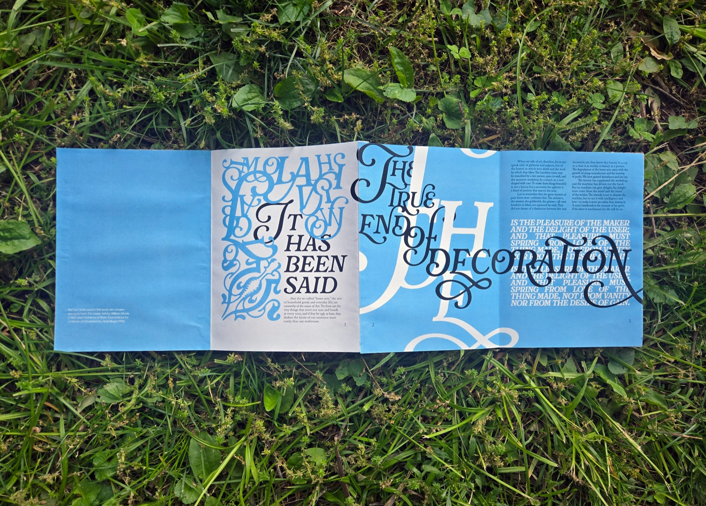
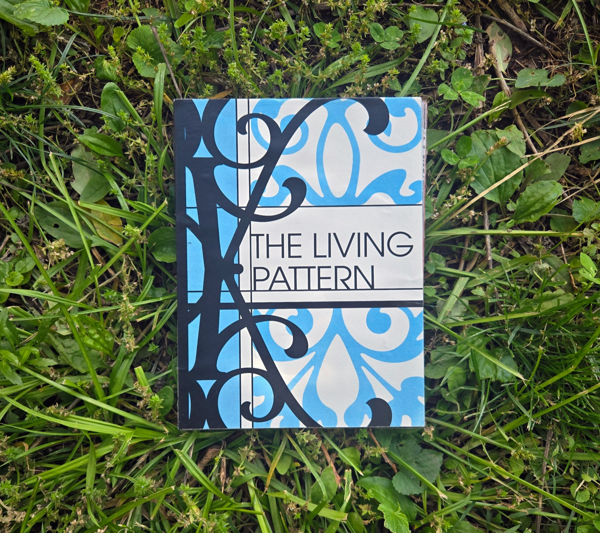
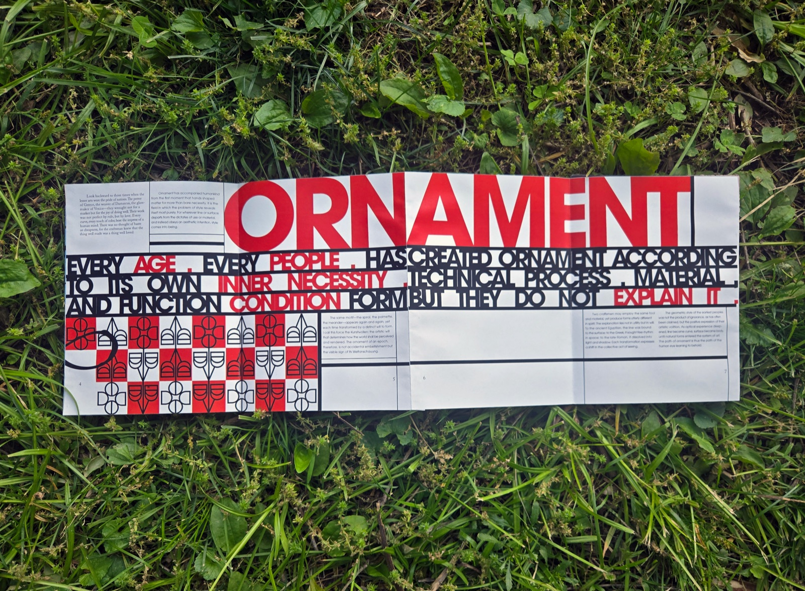
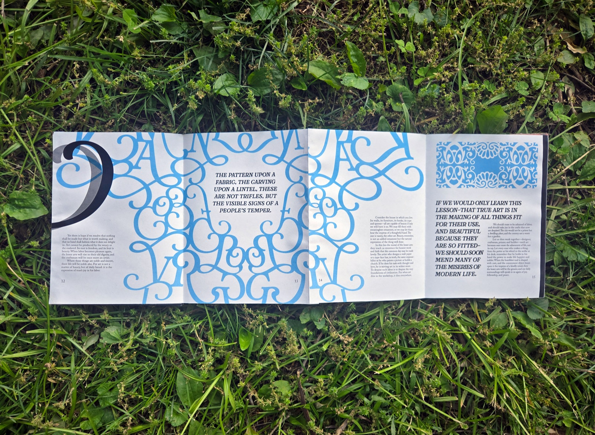
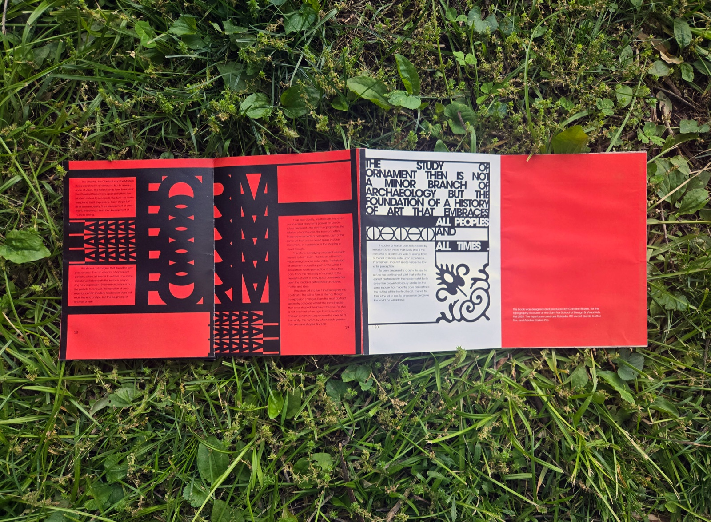

The Living Pattern
- InDesign
- Illustrator
This accordion book design investigates how typography can serve as a visual argument, translating two contrasting art-historical texts into distinct yet interconnected typographic systems.
The Lesser Arts by William Morris and Questions of Style by Alois Riegl present opposing perspectives on ornament, materiality, and modern design. Morris champions craftsmanship and the decorative arts as essential to daily life, while Riegl approaches style through abstraction and structured historical analysis. Their differing viewpoints provided me with an engaging framework for exploring how design language can reflect ideology and cultural context.


Two typographic identities
Drawing thoughtfully from the historical movements associated with each author, I created two contrasting typographic identities.
Morris’s text is brought to life through an Art Nouveau-inspired approach, with fluid, interconnected letterforms that evoke the tactile qualities of ironwork and textiles. In contrast, Riegl’s writing is interpreted through the aesthetics of Viennese Secessionism, where structure and geometry define composition. Each system offers a creative response to the distinct tone and philosophy of its source, sustaining an engaging visual conversation.

